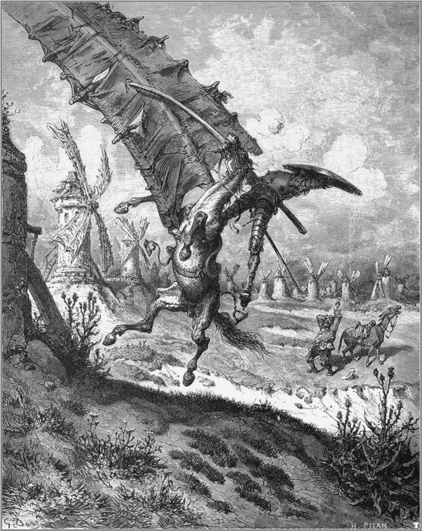

读之前
全书最后一页：报告 17 的后半，10 月 17 日到 11 月 21 日，十五条，前五条长，中间几条很短，最后两条又长起来。读过中篇的你知道文字会退回去；这一次留意它是怎么退的：先丢掉的是哪一样，最后还剩下什么。另一条线是人：查理怎么对待想帮他的人，他自己要的又是什么。
10 月初他砸了唱片和音响，撕了《失乐园》，不再去 Strauss 那里做治疗，也不再回 Beekman 做测验。夜里出门迷了路，是警察送回家的。10 月 11 日 Alice 来了，两人终于在一起，她答应他一说走就走。早上醒来，他常一时想不起身在何处。他还在打字，文字还是通顺的。
读的时候带着这几个问题。不用先找答案，读完回来对照「检查一下理解」。
他嘴上说要和衰退斗。留意他想出的办法，和他每天实际在做的事，是不是一回事。§1–§6
拼错的词从哪一条开始出现？先丢的是拼写，还是 09 页他刚学会的标点和撇号？§6–§9
留意每个人对他好的方式：有的他收下，有的他推开。差别在哪里？§2–§15
「窗子」在这一页出现了好几次。每一次，谁在窗子这边，谁在那边？§1 §3 §15
分节地图
这一页有十五条带日期的报告，中间几条很短。读完一条打个勾；每条下面的英文是那一条开头的几个词，在 Kindle 里搜它就能跳过去。没读的那几行先模糊着，免得提前看到情节，点一下就能看清。全页约 4600 词，一次读得完。
10 月 17 日约 100 词 Why can’t I remember? I’ve got … 留意他给自己的症状找的那几个词，和最后一句里等着的人。 10 月 18 日约 300 词 I’m forgetting things I learned recently. … 留意一只箱子为什么让他发那么大的火，他想起了谁。 10 月 19 日约 400 词 Motor activity impaired. I keep tripping … 留意他一天到晚看的是什么，和他拿起的那篇德文文章。 10 月 21 日约 600 词 Alice is gone. Let’s see if … 一整段对话。留意两人各自怎么说「为什么要学」。 10 月 25 日约 400 词 Deterioration progressing. I’ve given up using … 留意他打的比方（下行的电扶梯），和他对来看他的人的态度。 11 月 1 日约 300 词 A week since I dared to … 一个星期没写。留意第一个拼错的词，和他读的那本骑士的书。 11 月 2 日约 200 词 I forgot to write in yesterdays … 只有三段。留意他自己怎么评价自己做的事。 11 月 5 日约 200 词 Mrs Mooney is very worried about … 留意他为了省事想出的办法。 11 月 9 日约 100 词 Sunday again. I dont have anything … 很短。留意他还记得什么、忘了什么。 11 月 10 日约 200 词 Mrs Mooney called a strange doctor … 留意医生的笑和眨眼，对照 09 页 4 月 10 日派对上那个眼色。 11 月 11 日约 200 词 Dr Strauss came to the door … 留意他为什么不肯用别人付的钱，他想到的出路。 11 月 15 日约 100 词 I was looking at some of … 留意他读自己旧报告时的感觉。 11 月 16 日约 100 词 Alice came to the door again … 留意他嘴上说的和心里想的。 11 月 18 日约 600 词 Mr Donner was very nice when … 留意每个人对他说的话，和他自己怎么想。 11 月 21 日约 700 词 I did a dumb thing today … 全书最后一条。留意末尾的两个 P.S.。
背景：书里默认你知道的事
按在书里出现的顺序排，标题前是节号。人名后面括号里是中译本的译名，读者想对照译本时用。
§2 「后学的先忘」10 月 18 日查理说，照「经典模式」，最后学会的最先忘，接着又自问一句是不是这样。这个说法来自法国心理学家里博（Théodule Ribot）1881 年的《记忆的疾病》（Les maladies de la mémoire）：记忆受损时，越近的越容易丢，越早的越牢，后人叫它「里博定律」（Ribot’s law）。里博也讨论过会几种语言的病人，哪种语言先丢、哪种先回来。它今天还站不站得住，见读后部分的「对照今天」。§1 的 second childhood、senility 是当时说老年人糊涂的说法，见词条。
记忆按学会、经历的先后叠起来
最近学的、最近的事
几个月前
几年前
年轻时
小时候：说话、认人
受损时先丢这里
从上往下，一层一层
最牢，最后才丢
按里博（1881）的说法画的示意，不是实验数据
本站示意图：里博定律说的「时间梯度」。它是不是对所有人都成立，见读后部分。 §3 一天的电视1960 年代美国不少电视台夜里会停播。白天是猜谜节目（quiz program）、肥皂剧（soap opera，早年的赞助商多是肥皂和洗衣粉厂商，由此得名）、儿童节目和动画片；夜里放老电影，纽约的 WCBS 台把深夜的老电影档叫作 The Late Show，更晚的一档叫 The Late Late Show。到了收台，不少台先放几分钟的布道，再奏国歌《星条旗》，画面上飘着国旗，最后打出一张静止的测试图（test pattern），然后停播，第二天早上再开。
§3 克吕格的《论心理的整体》10 月 19 日查理拿起的文章是真实的：德国心理学家克吕格（Felix Krueger，1874–1948）1926 年发表的 Über psychische Ganzheit，意思是「论心理的整体」。克吕格是莱比锡大学「整体心理学」（Ganzheitspsychologie）一派的代表人物，这一派和同时代的格式塔心理学相近，都强调心理活动是一个整体，不是零件的拼合。文章是德文写的。查理说是自己研究里用过的，可见手术后他直接读德文的心理学文献。
§5 新出场的人查理 6 月搬进 43 街和第十大道一栋楼的四楼（报告 14）。这一条里，楼里的房东第一次在报告里露面。
Mrs. Mooney 穆尼太太 这栋楼的女房东，爱尔兰口音，爱聊楼里的人。报告 8、9 里的 Flynn 太太是他搬家前那处的房东，不是同一个人。
§6 风车和骑士：《堂吉诃德》查理没说书名，他读的是西班牙作家塞万提斯（Miguel de Cervantes）的《堂吉诃德》（Don Quixote），第一部 1605 年出版：一个读骑士小说读入了迷的乡绅，自封骑士，骑一匹老马，带着侍从桑丘（Sancho Panza）出门行侠，处处碰壁挨打。最有名的一段在第一部第八章：他把原野上三四十架风车当成巨人，挺枪冲上去，被风车的翼板连人带马甩了出去。查理记成了「龙」。

多雷（Gustave Doré）1863 年为《堂吉诃德》画的插图：堂吉诃德和他的马撞上风车，远处是桑丘和他的驴。Gustave Doré，公有领域，维基共享资源 §14 quiz kid 是从哪儿来的美国有个叫《Quiz Kids》的节目：1940 年起在 NBC 电台从芝加哥播出，台上坐一排挑选出来的聪明孩子，回答听众寄来的问题，1949 年起也上了电视。节目红了以后，quiz kid 成了「特别聪明的孩子」的代称。§14 有人这样叫查理，读的时候想想这个词放在一个成年人身上是什么味道。
词与短语
三类：紫边的「查理拼的」是他拼错的词，先写还原的拼法；黄边的「每个字都认识」是熟词生义、俚语、别人话里的弦外之音；其余是这里用法特别的词。斜体小字是原句里的几个词，在 Kindle 里搜它就能找到原文，拼错的照拼错的抄。
§1 10 月 17 日
fugue (of amnesia)
… remember what’s happening. Fugues of amnesia. …
（失忆的）神游、一阵阵的恍惚
精神医学里的 fugue 指一段时间忘了自己是谁，有时还离家远走，事后想不起来；音乐里同一个词是「赋格」。查理借它说自己一躺好几天、不知道身在何处的那几阵。
second childhood
… Symptoms of second childhood—what do they …
老来返童，老糊涂
说老年人糊涂得像小孩。紧跟着的 senility 也是当时说老年糊涂的词。查理才三十出头，用的是说老人的词。
come on
… I can watch it coming on.
（病、坏事）一点点来了
come on 说病、天气、坏事「开始、发作」。他能看着它来，这是这句话最难受的地方。
§2 10 月 18 日
humor someone
… She’s humoring me. And when …
迁就，顺着（某人）
humor 作动词不是「幽默」，是顺着别人的意思、不去点破。
lousy
… the lousy lamp he made and …
蹩脚的，做得很差的
本义「长虱子的」，口语里是「差劲」。说的是 16a 页 Warren 那个男孩做的灯座，那天查理也跟着夸了它。
§3 10 月 19 日
motor activity
Motor activity impaired. I keep tripping …
运动功能（受损）
motor 在医学里是「运动的、管动作的」，不是马达。这一句省了主语和系动词，是病历的写法：他在给自己写病程记录。
soap opera
… the old movies, the soap operas, …
肥皂剧
见「背景」。
the late-late show
… the late show, and the late-late show, …
（深夜的）老电影档
见「背景」。late show 已经很晚，late-late show 更晚。
sign off
… before the channel signs off for …
（电台、电视台）收台，结束当天的播出
sign off 也指写信、发言「署名结束」。见「背景」。
test pattern
… finally the channel test pattern that stares …
（电视的）测试图
收台后打出的一张静止图。见「背景」的照片。
know better than to
… should know better than to drug …
（应该）明白不该……
I should know better than to … 是「我该明白不能……」。drug 作动词是「下药、麻醉」：他说自己拿电视麻醉脑子。
reclaim
… child in me is reclaiming my …
收回，要回（原本属于自己的东西）
re- 是「回」：把原本属于自己的东西要回来。他心里的那个孩子在把这颗脑子要回去。
§4 10 月 21 日
wallow in
… You didn’t wallow in your own filth …
在……里打滚，沉溺于
本义是猪在泥里打滚。后面的 self-pity（自怜）也接在这个 wallow 上。
snarl and snap at
… you didn’t snarl and snap at people.
冲人龇牙、厉声呵斥
snarl 是狗龇着牙低吼，snap at 是狗冲人咬一口；用在人身上就是「对人恶声恶气」。
a retarded person
… never seen in a retarded person before.
智障者（当时的说法）
retarded 是当时的用词，今天英语里已经被当作冒犯，改说 intellectual disability（智力障碍）。
drive at
… understand what she was driving at.
（话里）想说的是什么
what are you driving at? 是「你到底想说什么」，和开车无关。
come right out and say
… she didn’t come right out and say …
直截了当地说出来
come out 在这里是「说出口」。
talk around
… She talked around them and expected …
绕着说，不点破
around 是「在周围打转」，不碰正题。
Always the schoolteacher.
… how much it matters. Always the schoolteacher.
老是一副当老师的样子。
省掉了 You’re。Alice 是他在成人班的老师，这句是拿她的本行挖苦她。
§5 10 月 25 日
longhand
… write out these reports in longhand.
手写
相对于打字、速记。
down escalator
… I was on a down escalator …
往下走的自动扶梯
他自己的比方：站着不动会一路降到底，往上跑才能停在原处。
hold one’s own
… maybe I can hold my own.
守住，不落下风
不是「拿着自己的东西」。常说病人 is holding his own：病情稳住了，没往坏里走。
come around
… Dr. Strauss came around the day …
上门来，来看看
come around 也有「回心转意」的意思，这里是「过来一趟」。后面的 coming around here 同义。
look in on
… would look in on me to …
顺便来看看（照应一下）
常说探望病人、老人。他猜是 Alice 或 Strauss 托她来的。
§6 11 月 1 日
laid in bed
… I think I laid in bed …
lay in bed 躺在床上
「躺」是 lie，过去式 lay；laid 是「放」（lay）的过去式。美国口语里常混。10 月 17 日他还写的是 I lie in bed。
get hold of oneself
… Ive got to get hold of myself.
振作起来，控制住自己
不是「抓住自己」。Ive 没有撇号。
windmills were dragons
… thought the windmills were dragons.
把风车当成龙
塞万提斯原书里是巨人，见「背景」。
rememberd
… but then I rememberd that there …
remembered 想起来
漏了一个 e。这一页第一个真正拼错的词；同一条里 Todays、cant、Ive 已经丢了撇号。
§7 11 月 2 日
thru
… thru my window when I put …
through 透过
thru 是美国的非正式写法，招牌、便条上常见。报告 2 里他写 Burt 的 we are not thru yet，也是这样拼的。
§8 11 月 5 日
loafters
… she dont like loafters. If …
loafers 游手好闲的人
多了一个 t。loafer 也是一种不系带的便鞋，这里是 Mrs. Mooney 嘴里的懒汉。
have no use for
… she has no use for me.
看不上，容不下
字面是「对我没用处」，意思是「这种人我不要」。译本：「她也拿我没办法」。原文是她容不下懒汉，不是拿他没办法。
§9 11 月 9 日
asperin
… awful headaches and asperin doesnt help …
aspirin 阿司匹林
照读音拼。同一条里还有 sory（sorry）。
§10 11 月 10 日
a strange doctor
… Mrs Mooney called a strange doctor to …
一个不认识的医生
strange 在这里是「陌生的、没见过的」，不是「古怪的」。译本：「一位奇怪的医生」。照常见义译了；原文说的是查理不认识这位医生。
thot
… like he thot I was crazy.
thought 以为
照读音拼，gh 不发音就不写。报告 1–8 里他常这样拼。
rabits foot
… I lost my rabits foot and …
rabbit’s foot 兔脚（护身符）
少一个 b、没有撇号；后面的 horshoe 是 horseshoe（马蹄铁）。这几样好运物 01 页讲过。
§11 11 月 11 日
put someone out
… I have to put you out.
把人赶出去（不让住了）
put out 常见义是「熄灭」「麻烦别人」，房东嘴里就是撵房客。这半句是 Mrs. Mooney 的原话，没加引号：前面还是 She said，到这里 I 成了她自己，you 是查理。
werk
… I am strong and I can werk.
work 干活
报告 8 的 outside werk placmint 也这样拼（07 页）。
charety
… I wont take charety from anybody.
charity 施舍，救济
照读音拼。I won’t take charity 是穷而要强的人的常用话。
§12 11 月 15 日
baught
… some of the books I baught …
bought 买的
把 bought 和 caught、taught 那一组混了。
send away (for)
… Ill send away and by some …
写信去订购，邮购
按杂志上的广告把订单和钱寄去，东西寄回来。by 是 buy，同音拼错。
§13 11 月 16 日
brout
… Mrs Mooney told me Alice brout …
brought 带来
ough 整个丢了，只照着音拼。
reed and rite
… forget how to reed and rite...
read and write 读和写
两个都是同音的别的词：reed 是芦苇，rite 是仪式。rite 报告 1 就这样拼（01 页）。
§14 11 月 18 日
you got guts
… and said Charlie you got guts.
你有种，你有胆量
guts 本义是内脏，口语里是「胆量」。got 是 have got 的口语省略。
suspicius
… Frist he was very suspicius but …
suspicious 起疑心
同一句里 Frist 是 First，字母换了位置。
a real quiz kid
… a very smart fella—a real quiz kid.
真是个神童（反话）
见「背景」。前面的 your 是 you’re。这句话要反着读：查理自己也写了，从口气听得出是在取笑他。
flower
… loading the sacks of flower and …
flour 面粉
flower 和 flour 读音相同，他写成了「花」。书名里的那个词，在面包店的面粉袋上冒了出来。译本：「我在搬面粉的时后」。用「时后」模拟错字，flower 只能译成「面粉」，花没有了。
start up with
… nobodys gonna start up with him …
招惹，找茬
口语。Don’t start up with me 是「别惹我」。
answer for
… with him without answering for it.
为……付出代价
不是「回答」。answer for it 是「要为这事负责、吃苦头」。
§15 11 月 21 日
lessen
… Im redy for my lessen today …
lesson 功课
lessen 是另一个真词「减少」，Kindle 长按会查到它。redy 是 ready。
holy smoke
… I said holy smoke I reely …
天哪！
惊叹语，和烟没有关系，有点孩子气、老派。reely 是 really。
pulled a Charlie Gordon
… reely pulled a Charlie Gordon that time.
干了件查理·戈登式的蠢事
09 页讲过这个说法：面包店的人拿他的名字当「蠢」的代称。这一回是他自己这样说自己。译本：「我这次真的摆了查理·高登一道」。摆人一道是捉弄了别人，意思反了；09 页说过译本前两处也这样处理。
genus
… Charlie Gordon was once a genus …
genius 天才
漏了 i，恰好拼成另一个真词 genus（生物分类的「属」），Kindle 长按查到的是错的意思。
luky penny
… rabits foot and a luky penny …
lucky penny 幸运币
捡来当护身符的一分硬币，01 页讲过。译本：「我弄了一只新的兔脚」。后面没有幸运币，译本这里漏了它。
new
… that I never even new were …
knew 知道
同音字：k 不发音，他就不写。曲线不把这种拼成别的真词的错算进「拼错」。
evel eye
… some body put the evel eye …
evil eye 邪眼
put the evil eye on someone：民间迷信，以为有人用恶毒的目光就能让你倒霉。16c 页母亲也说过，有人给她的孩子下了 evil eye。some body 拆成了两个词。
toren cover
… I red with the toren cover.
torn cover （封面）撕破的
red 是 read 的过去式（同音），toren 是 torn，后面的 tored 是 tore。
hole world
… new evrything in the hole world.
whole world 全世界
同音字。这一句里还有 new（knew）、evrything。
inportent for sience
… out some thing inportent for sience.
important for science 对科学重要的
inportent 的 m 写成 n（b、p 前面该用 m），sience 漏了 c。
grouch
… not to be such a grouch …
爱发牢骚、脾气坏的人
报告 6 里他骂 Nemur 时拼成 growch（01 页）。这一回满纸错字，这个词倒拼对了。
查理的文字
10 月 17 日到 25 日，「拼错的词」都是 0，变的是句子：10 月 17 日平均每句不到 9 个词，Motor activity impaired 这种病历式的短句；「长词」从 5.3% 落到 2.7%。10 月 19 日他说打字越来越难，25 日改成手写。
11 月 1 日曲线第一次离开 0：撇号掉了（Todays、cant、Ive，曲线把这种算作拼错），还有这一页第一个真正拼错的 rememberd。09 页 4 月 8 日他才学会撇号。切到「标点」（数的是逗号、分号、冒号、破折号，不算句号）：11 月 1 日起几乎是 0，只有 11 月 2 日、9 日还剩几个逗号。拼错却到 11 月 16 日才跳到 9.2%，21 日 11.3%，回到报告 1–3（16.1%、15.5%、14.9%）的量级。后学的标点先丢，先学的拼写后丢，本站的读法：正应了他 10 月 18 日说的「后学的先忘」。最后几条的数偏低：flower、brake、cloths、new、hole、their 这类拼成别的真词的错，曲线不算。译本：「她为我感到南过」。这是译本的第一个错别字，在 11 月 9 日，比原文晚了一个星期；从这一天起译文也没有逗号了。最后一条里「知到」「便笨」这类同音字最密。
值得停下来的句子
Why am I always looking at life through a window?— §3，10 月 19 日，看了一整天电视、看到测试图之后。本站译：为什么我总是隔着一扇窗子看生活？
上一句他刚写到测试图隔着电视的「小方窗」盯着他。这一页的窗子不止这一扇：§1 小查理隔着窗子盯着他、在等；§6 他从窗口看人去教堂；§15 最后那封信里，他想起那个撕书的人，说像是从窗子里看见他。下面这张图把前面几页的窗子排在一起。
窗子这边 写报告的「我」
窗子那边 在看的那个
12 页 十四五岁的查理
13a 页 云里约五岁的查理
14c 页 窗外贴着的那张脸
16c 页 窗玻璃上男孩的脸
17a 页 窗边等着的查理
17b §1 小查理，在等
17b §15 撕书的人 「我」
本站示意图（本站的读法）：前几页的窗子。圆点是写报告的「我」。前六次，「我」在窗子这边，旧查理在那边看着他；最后一条反了过来：写字的人站到窗子那边，看的是那个撕书的人。 前面几页，写报告的人一直在窗子这边，旧查理在那边看。到了 §15，写字的成了旧查理，他隔着窗子看见的那个人，长得像他，样子、说话却不一样，他不认为那是自己。这个画面是长篇加的：中篇的告别信里有那本封面撕破的蓝皮书，没有撕书的人，也没有窗子。
please if you get a chanse put some flowrs on Algernons grave in the bak yard.— §15，11 月 21 日，告别信末尾的第二个 P.S.。本站译：要是有机会，请在后院 Algernon 的坟上放些花。
书名落在全书最后一句上。chanse、flowrs、bak 三个拼错的词，一句话里没有一个逗号。§8 他说天冷了还在往坟上放花，Mrs. Mooney 觉得他傻；16b 里他把 Algernon 埋在了后院。前一个 P.S. 是劝 Nemur 别那么爱发脾气。两个 P.S. 都在替别人操心：一个替活着的人，一个替死了的老鼠。
读完想一想
1. §4 Alice 说，手术前的他觉得别人笑他就会喜欢他，还跟着一起笑自己；§15 他在 P.S. 里劝 Nemur：让别人笑你，就容易有朋友。同一个想法，从 Alice 嘴里说出来，和从查理笔下写出来，你听着一样吗？
本站的看法 话差不多，分量不一样。Alice 说时，是在惋惜他丢掉的那个笑容；查理写时，是真心把它当成交朋友的办法，还拿去劝 Nemur。读者见过面包店的人当初怎么笑他（09 页），也看到 §14 有人真的站出来护着他。小说没说这是退回去的天真，还是转了一大圈才懂的道理。本站觉得两样都有：他忘了很多东西，没忘怎么对人好。
2. Alice 和 Strauss 来，他不开门，也不肯用他们留下的钱；Mrs. Mooney 送来的鸡汤他收了，后来又回面包店要回了旧工作。他能接受的帮助和推开的帮助，差在哪里？换了你，会怎样帮他？
本站的看法 他推开的不是帮助，是怜悯和「迁就」（§2 那只箱子），是在见过他聪明时样子的人面前出丑。Mrs. Mooney 看见满地狼藉也不吭声；Donner 听完他的事，拍拍他的肩，说他有种。Alice 的好意却处处提醒他丢了什么。§13 他写明了：不让她进门，是怕她笑他，心里其实还爱着她。帮一个正在失去能力的人，难就难在这里。
3. 告别信里查理说，他很高兴得到第二次机会，也说他替全世界和他一样的人做了一件事。当事人事后说「值得」，能不能替这场实验作答？
本站的看法 不能全算。他说值得，是他的心意，该尊重；可手术前签字同意的是 Norma（01 页），他自己那时未必明白同意的是什么，现在他也说不清自己做了什么（§15）。今天的研究伦理看重的是事先：受试者是否真正知情、能不能随时退出、试验之后有人负责照顾。这封信让人难过，也让这些问题更难回避。
对照今天
成立 后来的事实印证了这个说法部分成立 一部分对，一部分被后来的事改了被改写 后来的事实推翻了它，或者完全变了样书里的说法：最后学会的最先忘，这是「经典模式」（查理，§2；他自己也问了一句是不是这样）
书里 查理发现最近学的东西先忘了，说这符合经典的规律，又说要再查一查。
当时 这个说法出自里博 1881 年的《记忆的疾病》，19 世纪末起就被当作记忆衰退的规律，但很长时间里主要靠个案观察，缺少定量的测量。
今天 在海马等内侧颞叶受损、阿尔茨海默病等情况下，近的记忆比远的先丢，这个「时间梯度」常常观察得到。但它不是铁律：有研究发现语义性痴呆的病人反过来，近一两年的事比早年的记得好。梯度为什么会出现，至今还在争论。另外，研究测的多是经历过的事件和新闻事件，查理说的是学会的知识，两者不完全一样。核对于 2026-10。依据：Warrington 在 PNAS 的综述（1996），Meeter 等人在 Psychological Bulletin 的综述（2004），Hodges 与 Graham 关于语义性痴呆的研究（1998）。
书里的说法：只要不停地读、学新东西，就能留住一部分智力（查理，§5）
书里 他把自己比作站在往下走的电扶梯上，往上跑也许能停在原处，于是去图书馆借了一堆书。
当时 1959 年起，美国堪萨斯州托皮卡一家退伍军人医院发展出「现实导向」疗法（reality orientation），1966 年正式发表：工作人员反复告诉糊涂的老年病人日期、地点和人，还给他们上课。
今天 现实导向后来发展成「认知刺激」。Cochrane 2023 年的系统综述汇总了 37 项随机对照试验：对轻到中度的失智者，认知刺激让认知测验的分数小幅提高（其中 25 项用了简易精神状态检查，平均高约 2 分），证据把握度中等。这些研究多是有人带领的小组活动，不是一个人埋头读书。书里查理的衰退是虚构的，这里判的只是「学新东西有助于守住认知」这一句。核对于 2026-10。依据：Taulbee 与 Folsom（1966），Woods 等人的 Cochrane 系统综述（2023）。
检查一下理解
先在心里答，再点开。答错的那题，回书里把对应那一条再读一遍。
1.（§2）他为什么把 Alice 收好的箱子踢翻？ 他要碎唱片、乐谱和书摊在地上，提醒自己正在丢下什么。更让他受不了的是 Alice 心里觉得傻、脸上却装作正常，像在迁就他，让他想起在 Warren 大家怎么夸那个做得很差的灯座。
2.（§3）10 月 19 日让他大吃一惊的是什么？ 他拿起研究里用过的克吕格那篇德文文章，想借它读懂自己写的论文，先以为眼睛出了毛病，才明白自己读不了德文了；再试别的语言，也全没了。
3.（§5）「往下走的电扶梯」是什么意思？他据此做了什么？ 站着不动就会一路降到底，往上跑也许能停在原处。所以他去图书馆借了很多书，不停地读新东西，虽然大多已经太难。
4.（§10）他为什么把那位医生赶出去？ 他说自己以前是天才，医生笑了，像对婴儿一样跟他说话，还冲 Mrs. Mooney 眨眼。他认定医生在取笑他。
5.（§14）Joe、Frank 和 Gimpy 要让 Donner 开除那个新来的人，查理怎么说？ 他说不该开除：那人有老婆孩子，也说了对不起；他还记得自己被面包店辞掉时有多难过。该给人第二次机会。
6.（§15）这一回的 pulled a Charlie Gordon，和 09 页那一次有什么不同？ 09 页是别人拿他的名字当「蠢」的代称，他在派对上才听懂。这一回是他自己用的：走进早已不属于他的教室，看 Miss Kinnian 哭着跑出去，他想起了手术的事，用这句话说自己，然后在她回来前走掉。
用一句话说这一页：
精彩回顾
隔几周回来，先看这几张卡片。想不起来的那张，点节号回到这一页，再回书里那一条。
一句话： 他一样一样失去学会的东西，最后留下的是对人的好意，和一句请人给 Algernon 的坟放花。
踢翻的箱子 Alice 把碎唱片、乐谱和书收进箱子，他一脚踢翻，要它们摊在地上提醒自己。他受不了被「迁就」，想起 Warren 那个做得很差的灯座。
§2 读不懂的德文 他拿起研究里用过的克吕格的文章，以为眼睛出了毛病，才发现德文没了，别的语言也全没了。
§3 往下走的电扶梯 站着就会降到底，往上跑也许能停在原处。他去图书馆借了一堆书，大多已经读不懂。
§5 风车成了龙 读那本骑士的书，他记得书里「还有别的意思」，却想不起是什么，为此生自己的气。巨人被他记成了龙。
§6 Charlie you got guts 回到面包店扫厕所，Donner 拍拍他的肩说他有种。有人欺负他，Joe 出手，Gimpy 说「你在这儿有朋友」。他替欺负他的人求了情。
§14 最后的 P.S. 走错进 Miss Kinnian 的教室以后，他决定去 Warren。信末两个 P.S.：劝 Nemur 别那么爱发脾气；请人给后院 Algernon 的坟放花。
§15